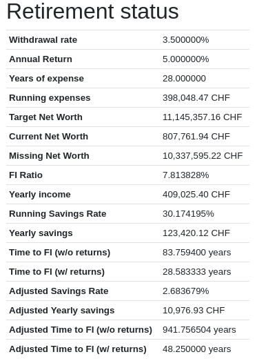
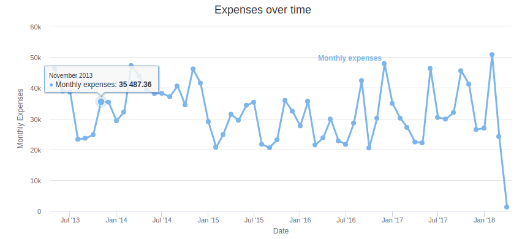
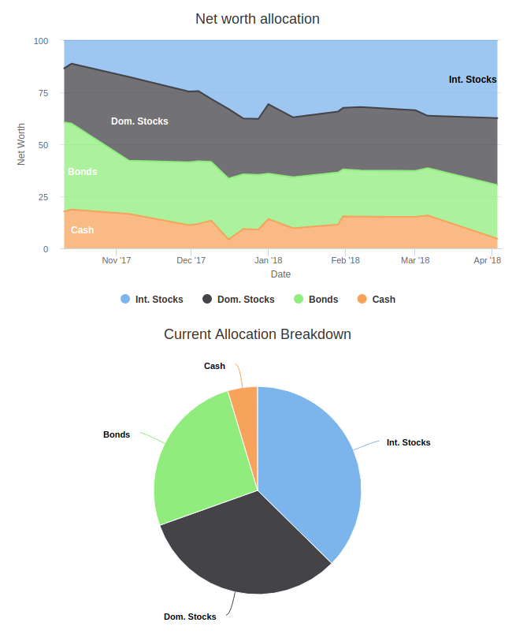

budgetwarrior 1.0.1: Allocation tracking, Retirement calculator and bug fixes
I'm happy to announce the release of budgetwarrior 1.0.1. This new version contains a series of improvement over the 1.0 version and some new features.
I haven't been very active this last month. I have been working a bit on budgetwarrior for features I needed for my budget. I've also been contacted with questions on my thor operating system and since that point I've doing some work on thor as well.
This new version of budgetwarrior has quite a few new features even though it's a minor version.
Note: The data from all the views is totally randomized and does not make sense ;)
Retirement Calculator
The biggest novelty in this version is the addition of a retirement calculator. This is still very basic, but it may give information on how close (or far) you are from early retirement. Here is what the view gives you:
Using your annual withdrawal rate and expected Rate Of Return, it can compute how many years you will need to reach your goals Financial Independence (FI). It will also gives you your FI ratio and a few more information about your savings rate, income, expenses and so on. It's nothing very fancy but it can be very useful.
New features
I've also added a few graphs based on the budget information. The first is the visualization of the expenses over time:
This can be pretty useful to see how are your expenses going. Even if your income is going, expenses should not necessarily go up (you should save more!).
Another new view can show your asset allocation over time and the current asset allocation of your entire net worth or specifically for your portfolio.
This is also really useful if you want to have a global view of your asset allocation into bonds, stocks and such.
There are also two other new minor features. You can now search expenses by name. This is really useful once you start having many expenses. Another new view is the Full aggregate view. Before, you could aggregate your expenses by month or year, now they can be aggregate since the beginning of the budget. With this, you can see how much you spend on coffee since you started keeping track of your budget. For me, it's a lot! Both these features are available both in command line and in the web interface.
Improvements
There are also a few improvements with this new version. You can now set a default account (in the configuration file with default_account=X). It will be set by default in both the web view and the console view. The rebalance view has been made more clear. I've added a second batch update view with only the assets that are being used (amount > 0). And lastly, the yearly overview is now displaying correctly the previous year savings rate.
Finally, there are also a few bug fixes. That is is the main reason I decided to release now. If you were using asset with different currency, several views where not correctly using the exchange rate to display them. Moreover, the average expenses in the monthly overview was not correct. Finally, if you were editing old expenses after having archived the accounts, it could be edited with the wrong account.
Installation
If you are on Gentoo, you can install it using layman:
layman -a wichtounet emerge -a budgetwarrior
If you are on Arch Linux, you can use this AUR repository <https://github.com/StreakyCobra/aur> (wait a few days for the new version to be updated)_
For other systems, you'll have to install from sources:
git clone --recursive git://github.com/wichtounet/budgetwarrior.git cd budgetwarrior git checkout 1.0.1 make sudo make install
If you want to test the server mode, the default username is admin and the default password is 1234. You can change them in the configuration file with web_user and web_password.
Conclusion
Although it's a minor version, it improves and fixes quite a few things, especially for the web view. I encourage you to try it out. Don't hesitate to let me a comment if you fail to use it or don't understand something ;)
There are still a few things that I want to do, as I said when I introduced the web version. The website still needs to be made faster. And the communication between the console and the server can also be improved.
If you are interested by the sources, you can download them on Github: budgetwarrior.
If you have a suggestion or you found a bug, please post an issue on Github.
If you have any comment, don't hesitate to contact me, either by letting a comment on this post or by email.
Comments
Comments powered by Disqus